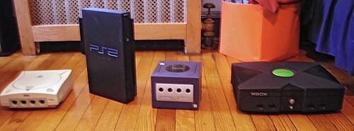

Nintendo & Sega
Sega bracht in 1988 de Mega drive uit in Japan. In Noord-Amerika kreeg de console de naam Genesis. De console was krachtiger dan veel oudere consoles en kon nieuwe soorten games afspelen. Sega wilde hiermee laten zien dat het een goede concurrent voor Nintendo was. Nintendo had op dat moment al veel fans en populair games. Daarom moest Sega meer doen dan alleen een goede console maken. Het bedrijf gebruikte reclames en bracht eigen games uit om meer spelers aan te trekken. Langzaam groeide de strijd tussen de twee rivalen.
In 1991 bracht Sega Sonic the Hedgehog uit. In de games van Sonic draait veel om snelheid en het snel doorlopen van levels. Bij Mario ligt de nadruk meer op springen en het ontwijken van obstakels. Sonic gaf Sega een stijl en maakte de Mega Drive (Genesis) aantrekkelijker voor spelers. Nintendo reageerde op Sega met de Super Nintendo Entertainment System (SNES). Deze console kwam in 1990 uit in Japan en in 1991 in Noord-Amerika. De SNES had betere beelden en geluid vergeleken met de NES en kreeg populaire games zoals Super Mario World. Spelers konden nu kiezen tussen twee bekende merken.


Meer spelers op de markt
De strijd tussen Nintendo en Sega liet zien dat er ruimte was voor meerdere grote gamebedrijven. Nintendo had veel bekende games, terwijl Sega met de Mega Drive (Genesis) en Sonic veel spelers aantrok. Andere bedrijven zagen dat de game wereld steeds groter werd. Zij wilden ook consoles maken en hun eigen publiek opbouwen.
In de jaren negentig kwam Sony op de consolemarkt met de Playstation. De console verscheen in 1994 in Japan en in 1995 in Noord-Amerika en Europa. In plaats vam cartridge gebruikte Playstation cd`s. Daarop was meer ruimte voor muziek, filmpjes en games. De Playstation werd ook bekend door 3D games. Hierdoor konden spelers games op een andere manier werelden beleven. Aan het einde van de jaren negentig veranderde de consolemarkt opnieuw. Sony was succesvol met de Playstation, Nintendo bracht de Nintendo 64 uit en Sega probeerde met de Dreamcast mee te blijven doen. Toch mislukte het Sega niet om zijn positie te behouden.
In 2001 stopte Sega met het maken van eigen consoles en ging het zich richten op games en software. In hetzelfde jaar kwam Microsoft met zijn eigen console: Xbox. Daarmee kreeg Nintendo en Sony een nieuwe grote concurrentie bij. De Xbox was krachtig en richtte zich op spelers die van grote games en online gamen hielden. Microsoft bracht ook Halo: Combat Evolved uit. Deze game werd een groot succes en hielp de Xbox populair te maken. Microsoft bleef zijn consoles vernieuwen. Met Xbox Live konden spelers online tegen elkaar gamen en met elkaar communiceren. Online gamen werd hierdoor een belangrijk onderdeel van console-gaming.